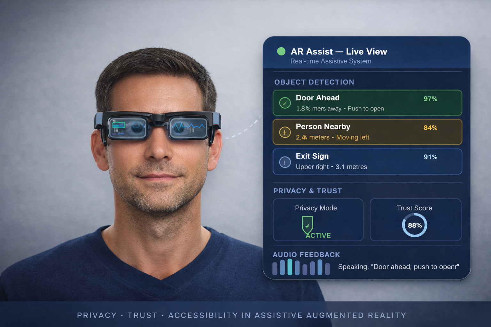

Research Areas
Our lab focuses on advancing privacy-preserving and accessible technologies in emerging interactive systems. We study how people perceive, trust, and interact with Generative AI, with particular attention to privacy risks, accessibility needs, and responsible design. Our current projects also investigate privacy and security challenges in augmented and virtual reality (AR/VR), aiming to understand and mitigate risks arising from immersive data collection and sensing. Through human-centered research, we seek to inform the design of secure, inclusive, and trustworthy interactive systems.
Artificial Intelligence (AI)
Trust, Privacy and Accessibility Perception of GenAI among Blind and Low Vision People
As Generative AI (GenAI) and GenAI-powered tools become increasingly embedded in everyday communication, information access, and decision-making, issues of trust, privacy, accessibility, and transparency are especially critical for blind and low-vision (BLV) users. While these technologies offer new opportunities for independence and inclusion, they can also introduce risks related to data use, opaque system behavior, and unequal access. Clear and accessible explanations play a key role in shaping how BLV users understand, trust, and rely on GenAI-powered systems, particularly when traditional visual explanations are insufficient. This line of work seeks to understand how design choices around privacy and explanation formats affect user trust and confidence. Ultimately, the goal is to inform the design of GenAI technologies that are explainable, accessible, privacy-aware, and worthy of user trust.
Privacy, Trust, and Accessibility in Assistive Augmented Reality

This research looks at privacy, trust, and accessibility issues in assistive augmented reality (AR) systems. As AR is used more in everyday life, it is important to understand how these systems share information, respect personal boundaries, and support different users. The work is broadly focused on assistive AR, but it is especially motivated by the needs of blind and low-vision users, who are often not fully considered in current AR design. The goal is to help create AR systems that are more inclusive, trustworthy, and suitable for real-world use.
Collaborative Technology
Privacy Barriers for BLV Users Using Instant Messaging Applications
This project explores privacy challenges that blind and low-vision users face when using instant messaging applications. Through interviews with 20 participants, we identified unique privacy vulnerabilities, accessibility barriers to privacy controls, and coping strategies these users employ. The findings informed design recommendations for more inclusive messaging platforms.
Accessibility of Collaborative Technologies for BLV professionals
Real-time collaboration tools (e.g., videoconferencing and project management platforms) are essential to modern work, yet they often present significant accessibility barriers for blind and low-vision (BLV) people. Although these tools enable both in-person and remote collaboration, persistent usability challenges can limit BLV professionals’ ability to fully participate in the workforce. To address this gap, we first examined the experiences and accessibility practices of 18 BLV meeting facilitators who regularly use videoconferencing tools. Our findings show that BLV professionals engage in substantial additional labor to facilitate meetings effectively, including extensive advance preparation, managing meeting security, monitoring participant activity, coordinating with co-hosts to mitigate accessibility barriers, maintaining professionalism, and actively advocating for accessible practices and technologies.
To assess the broader workplace implications of inaccessible collaboration technologies, we then conducted a large-scale online survey with 155 BLV users, evaluating the ease of use of 30 widely used collaboration tools. Results indicate that more than half of respondents reported that accessibility barriers negatively affect their collaboration experiences, job performance, and career advancement.
Publications
- Akter, T., Marathe, A., Gergle, D., and Piper, A. M., Beyond Accessibility: Understanding the Ease of Use and Impacts of Digital Collaboration Tools for Blind and Low Vision Workers . In Proceedings of the ACM SIGACCESS Conference on Computers and Accessibility (ASSETS 2025).
- Akter, T., Cha, Y., Figueira, I., Branham, S. M,, and Piper, A. M., “If I’m supposed to be the facilitator, I should be the host”: Understanding the Accessibility of Videoconferencing for Blind and Low Vision Meeting Facilitators . In Proceedings of the ACM SIGACCESS Conference on Computers and Accessibility (ASSETS 2023).
Miscellaneous
Financial Abuse of Older Adults

Financial abuse of older adults is a growing but often overlooked concern in today’s increasingly digital financial landscape. Older adults face unique challenges related to access, trust, and protection, which can leave them vulnerable to exploitation. Addressing these issues is essential for safeguarding financial autonomy and dignity in later life. This line of work aims to promote more inclusive, accessible, and trustworthy financial systems by informing human-centered design and policy decisions.